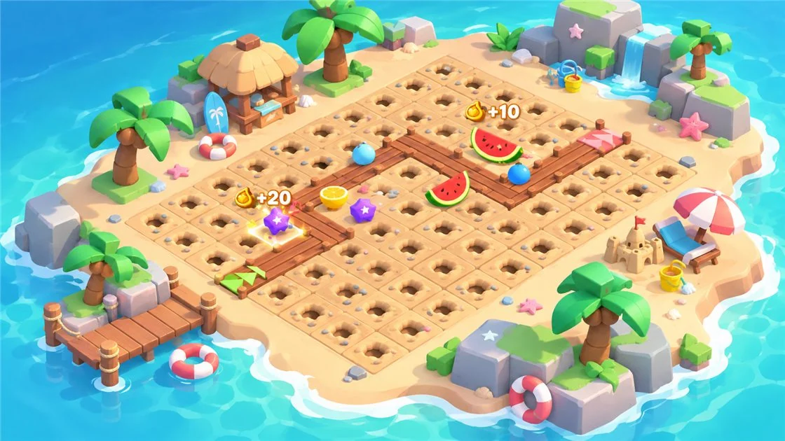
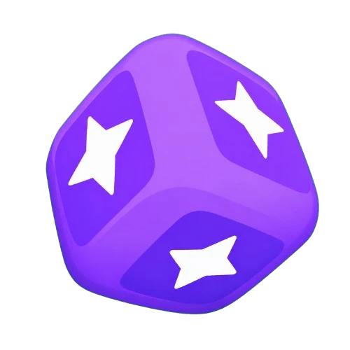
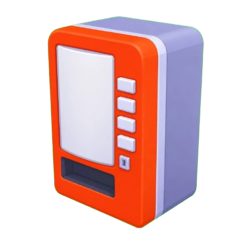
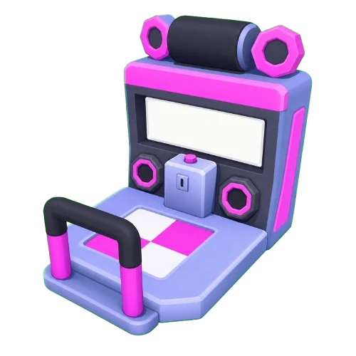
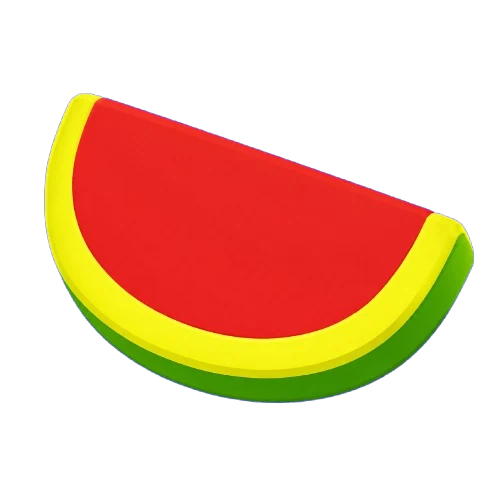
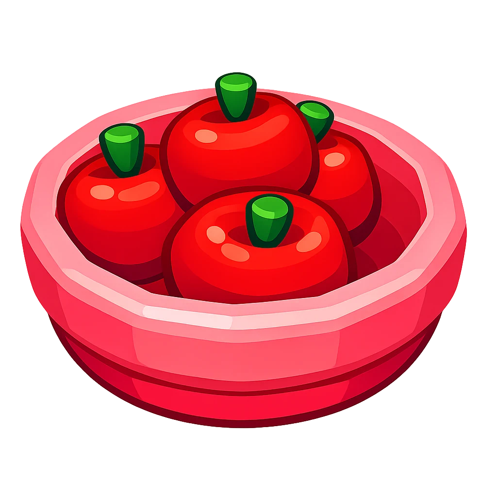
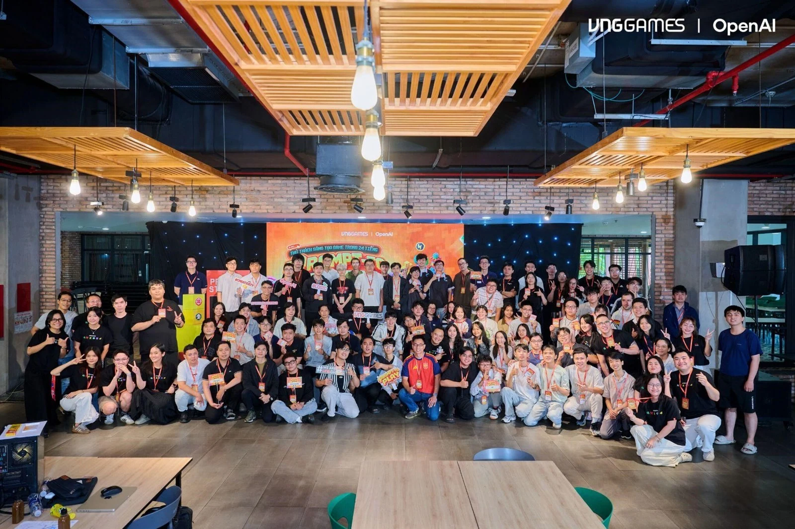

Make every tile count
Rotate each footprint and line up its influence area with the visitor path. Space is part of the puzzle.
TWO-PERSON GAME JAM · 2026
Small stalls.
Big chain reactions.
A cozy placement strategy game about building a summer park for Mochis. Arrange playful stalls, balance Heat and Refresh, and turn a good layout into a burst of Frenzy.

THE OFFICIAL TRAILER
01 / PLAN. OPEN. MAKE JOY.
Draft a stall → place it → open the park.
Watch the visitors, then build a better combo for the next day.
Rotate each footprint and line up its influence area with the visitor path. Space is part of the puzzle.
Mochis trigger stalls as they pass. Attraction, lingering and companions change how much each stop can earn.
Generate Joy, build toward Frenzy, and combine support or storage effects for a stronger day.
Build along the path and line up each stall’s influence area.
Unity capture · 20 October 2026 · Normal speedDevelopment footage from Project B. These layouts were arranged with the game’s placement and draft systems; gameplay runs at normal speed.
02 / THE SUMMER STRATEGY
The important choice is where a stall sits in the journey. A cooling stop can make the next attraction useful again.
Each Mochi carries its own Heat, from 0 to 100. Heating stalls turn the Heat they actually add into Rumble, which fills the park’s Frenzy gauge.
At maximum Heat, further heating is wasted and the Mochi’s Joy multiplier drops to 80%. Refresh removes Heat, restoring capacity for the next attraction.
Frenzy rewards the setup with a burst of Joy. Cooling remains part of the route, so the engine can keep going.
TRY THE RULE
At 90 Heat, adding 20 can only add 10. Try cooling down first.
A simplified rules illustration, not the game. Uses a 0.5 Heat-to-Rumble rate; bonuses, cooldowns and Frenzy timing are omitted.03 / LITTLE STALLS, DIFFERENT JOBS
A few faces from the park. Attractions raise the temperature; fruit and treats make room for more fun.

HEATTài Xỉu

HEATKoa Roa Ô Kê

HEATMá Nhải
Chái Choanh

REFRESHChái Dưa háo

REFRESHTô Cêm Dâu
Original stall sprites and base values from Project B’s Unity configuration. Values shown are before bonuses and may change with balancing.
Support effects improve activation chance, timing or visitor dwell time. A well-placed helper can make nearby stalls more valuable.
Food, companions and daily activation limits add another decision: where should the park spend its strongest interactions?
Storage stalls bank value and release it when conditions are met, such as reaching capacity, entering Frenzy or closing the park.
04 / MY WORK BEHIND THE PARK
My contribution focuses on grid placement, stall influence and visitor simulation, with configurable systems and placement validation.
Footprint rotation, occupied cells, locked tiles and path-blocking checks keep layouts valid. Influence previews help the player see where a stall will act.
Visitor movement, triggers, Heat and Refresh connect each stop to its result. The layout becomes a sequence of interactions the player can observe.
ScriptableObject definitions hold stall rules, footprints and level settings. An event bus connects gameplay events to feedback and UI.
I used ChatGPT as part of an AI-assisted development workflow during the jam, then published a playable HTML5 build on itch.io.

05 / MADE FOR PROMPT TO PLAY
Mochi Park began as a two-person project for VNGGames’ Prompt To Play 2026 AI game jam. We built the jam version in under one week.
The playable release and the development project capture a small idea with room to grow: thoughtful placement can turn a handful of stalls into a joyful chain reaction.
Visit the game